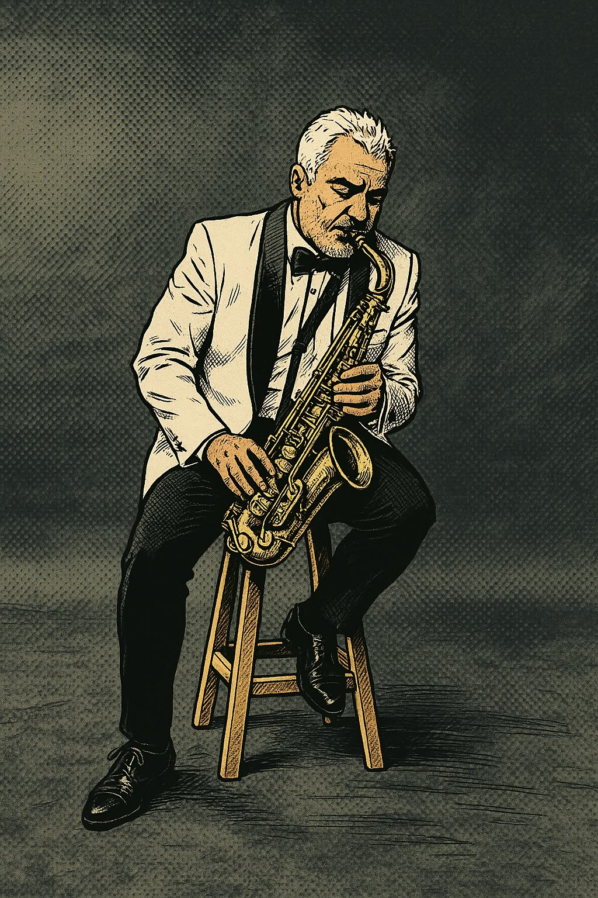

Kind of Blue
Espacio, elegancia y una conversación irrepetible entre seis músicos extraordinarios.
Conversar sobre este disco →Discos · Historias · Improvisación
Un espacio personal para compartir la música, los intérpretes y las historias que hacen del jazz una conversación siempre abierta.

Mi interés por el jazz nació de escuchar cómo una misma melodía puede convertirse en algo distinto cada noche. Desde entonces, cada disco es una puerta a otra época, otra ciudad y otra forma de mirar el mundo.
Esta página reúne recomendaciones, descubrimientos y notas personales. No pretende ser una enciclopedia: es una invitación a escuchar con atención y disfrutar el camino.
Álbumes esenciales para comenzar —o volver— a escuchar jazz.
Espacio, elegancia y una conversación irrepetible entre seis músicos extraordinarios.
Conversar sobre este disco →Una suite intensa y espiritual que muestra hasta dónde puede llegar la expresión personal.
Conversar sobre este disco →Ritmos inesperados, melodías memorables y una entrada amable a la experimentación.
Conversar sobre este disco →“El jazz no es solo música;
es una manera de estar presente.”
— Nota personal